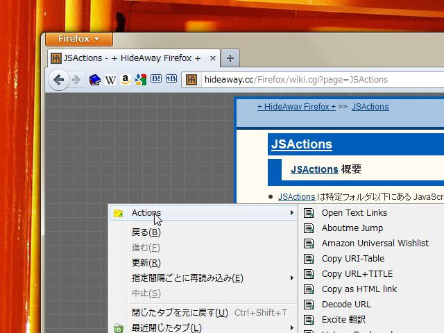
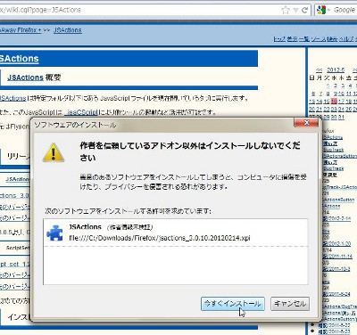
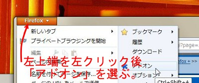
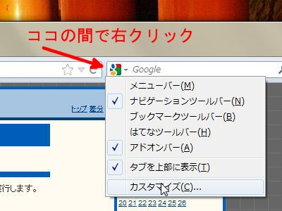
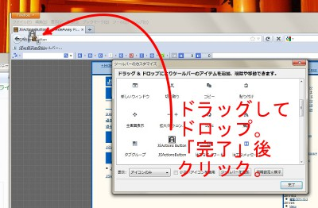

ブラウザからアプリを起動とかイロイロ。Firefox の拡張 JSActions

軍事にはじまる技術は多く、インターネットもその一つだと言われた。「NASA 新開発」が、最先端を示すキーワードだったが、今や北朝鮮問題を知る我々にとって「ロケット技術」は、開かれた世界を意味するものではない。 恥ずかしい話なのかもしれないが、私は、就職活動で大学の団体として電機メーカーのビルを訪れたとき、間違って社員用の入り口を使おうとしたとたんに警備員に強く制止されたことを覚えている。それまで学生として気軽に技術を紹介してくれていたメーカーの裏側を見た気がした。 パーソナルコンピュータによって、消費者が簡単に映像の編集や出版ができるようなったと言われた。逆に言えば、パーソナルコンピュータがない時代にも、それらの技術は存在して使われていたところがあるのだろう。 「技術」というのは、「消費者」のずっと向こうに太陽のように輝くもので、我々「消費者」は、せいぜいその恩恵に浴して生かされているだけで、その暑さ寒さが我々を死に追いやることがあっても、我々が何かをして影響できるものではないのかもしれない。 プロメテウスが持ち出したあと拷問を受けた「火」のような技術は、神ならぬ人が持ち出して意味のあるものではすでになく、開けるべきパンドラの箱はすべて「彼ら」が開けており、我々がときに追体験するのはその物語の仮想化された部分だけなのかもしれない。 だが、そんな我々の世界も今や夜の地上に星が輝く時代になった。未来に太陽の輝きを構成する者も、子供時代は星座の下で眠るのだろう。その時代に太陽に憧れたことを知っているから、親達は火を盗んだことにはならぬ範囲で我々に何かを伝えようとするのではないか。「消費者」が「技術」として接する物、それは太陽に怯えて暮らす者にあえて託された「星明かり」のような物なのかもしれない。 私は地方の普通高校で勉強がよくできた。高校のレベルは高くなくとも、その中ではダントツの一位を取れた。私は趣味ではパソコンをいじり、プログラムを学んでいた。そのころのパソコンは貧弱な性能しかなく、「商業作品」でも「俺にだって作れそうなゲーム」だった。 全能感あふれる時代、音楽を作ることは難しいと感じたが、それ以外のゲームを作るすべての技術を、私は会得したつもりだった。時間もほとんど問題ない。やる気さえあれば、あっという間にできる。そうとは言え、平均余命を時間に直し、そこから睡眠時間をひけば、使える時間に限りがあることもわかる。だから、まず、何にやる気を出すかが問題で、プランにもしっかり時間を使うべきなのだ…。 そんなとき情報集めの一つのソースとしていたパソコン雑誌に、私の同級生だった者のゲーム作品が載ったという噂を聞いた。まさかそんなはずがあるわけがないと思った。いや、あったとしても、アイデアがたまたまおもしろかったというに過ぎないだろう。そう考えた。 私は四年制国立大学に通った。ゲームは結局、作「ら」なかった。私は飲み会で、有名私立大学にも合格していたことぐらいしか自慢することがない人間になっていた。 ゲーム造りは、あっという間に、とてもシロウトが手の出せる領域ではなくなっていった。3D グラフィックスを駆使し、ネット対戦も行え、とても複雑なルールのシミュレーションゲームで人工知能が対戦相手になっている。音楽は、かなり速くから音色などに制限はなくなり、今や初音ミクなど「ボーカロイド」が音楽チャートを賑わわすようになっている。 今の私は「ニート」となってゲームは専ら遊ぶだけだ。ダウンロードでできるゲームを物色していたとき気がついた。あのジャンルという概念がほとんどなかった時代、「必殺！」時代劇ふうのアイデアは、確か「同級生だった者」が出したものだよな…。単純な静止画アドヴェンチャーにしないその複雑なゲームデザインは、どれほどパソコンの性能が上がろうとも、私には無理筋に思えたものだったが、今のマシンではより自由に動かすことすらできる…。あの時代に応募できる形にした「彼ら」、そういう「生き方」を私は知らなかった。 大学(院?)時代のある日、中学時代の友人と飛行場で偶然に出会った。(先の「同級生だった者」ではない。)彼は確か高校時代になってからモトクロスをやっていたとか聞いていた。彼は飛行機会社に就職するという。パイロットになりたいとも言っていたように思う。私はまだまだ学生のままで「そうだよな、普通はもう社会人なんだよな」…そんな風に思った。私でも自分が「遅れていっている」のはわかった。 9.11 テロのあと精神を病んで入院した私は、少し回復して療養所に移り、医師や看護士とは必ずしも役職が違う、リハビリを担当する方々と出会った。そこには、私と同じ年齢ぐらいの人が、中堅どころの地位で働いていた。もちろん、職業的にでもあろうが、その職業を選んだということでもあろうが、「障害者」たる私に、普通に接しようとしてくれた。 時間はいくらでもあったので、私より若い患者に人気のある彼の経歴を聞くようなこともあった。彼は、「大学」の授業で資格の勉強をし、資格がないと単位が認められないのがいくつもあるから…と、こともなげに言った。そんな話は私には初耳だった。 療養所を出て作業所に通うことになった。私はいつのころからか「プログラマにはなるまい」と思っていたが、ここに致ってはそれぐらいしか思い当たる職はない。パソコン関連の作業所に登録した。 そこにはパソコンが並んでいたが、通っている人の数の方が多く、パソコンで必要のない作業をする時間はなかった。しかも、公的な福祉であるため、夜残っての作業などもできない。 Linux パソコンしか使ってなかった私は、Windows の操作を間違うところからはじめ、Excel や Word すら使えるというレベルに致らなかった。プログラムやハードの知識を役立てるどころですらなく、印刷物のページ集め等の作業の遅さを誰かにサポートしてもらうぐらいだった。 これが「消費者」の世界。私がプロメテウスの火と思ったものは誕生日パーティーに使われずに残ったロウソクのようなもので、何かの役に立つものではなかったのだ。 プログラムができる我々は時代の産物で、我々はすべての人がプログラムできる未来を夢として持った。 そうはならないのが普通なのは、過去にそういった時代を経た電気技術者などにはわかりきったことだったのだろう。地上の太陽たる原発が爆発する時代たる今になって、そう思う。技術において、時代に勝る教育者はいない。 プログラムを使う上で、他者の API (アプリ利用仕様)を使うのは難しい。しかし、それをするがゆえに分業ができ、お天道様の下では技術者がそこでメシを食っている。そんな状況で、昔の API を使うようなアプリケーションが今も変わらず動いて欲しいというのは、「消費者」として虫が良すぎるのかもしれない。 今はいろいろなアプリがブラウザ上で動く、技術者が作っている物は「消費者」たるあなたの隣でセカセカ動いているパソコン上ではなく、主にそのずっと向こうにある「クラウド」＝サーバールームで動いている。それも「消費者」用の「星明かり」の技術だとしても、もうそんなところでしか維持できない。 やっと本題に触れるが、この記事で紹介する JSActions は、ブラウザから「あなたの隣」のパソコン上で動く昔かたぎのアプリを使えるようにもできる Firefox ブラウザの拡張機能(アドオン)だ。 JSActions を使うには、日曜大工程度にプログラムコードを多少書けることが求められる。もちろん、似たアプリを使っている別の者にコードを教えてもらうこともできるから、そんなに難しい話ではない。 昔のアプリを動かすだけなら、他の拡張機能もあるのだが、昔の API はいろいろあるので、JSActions のように少しプログラムを書けたほうが扱い方が広がる。何より、昔のアプリを使いたいだけなら、あっちとこっちの線をつなぐ程度の話なので、これぐらいのプログラムなら、普通の人(となった人)がいじれるはずだ。 子供がここからはじめるというのは無いのかもしれないけど、親がプログラムをいじれてるのは尊敬されることまちがいなし！(なんてね。) ■インストール 通常、Mozilla Firefox のアドオンは、Firefox の公式ページに行けばあるものだが、審査があるらしく、それをポリシーとして嫌うのか、少しアヤしい要素があるからか、それとも単に更新ごとにそれを行うのが面倒くさいのかはわからないが、しばしば、そこで手に入らないアドオンがある。 かつて JSActions は Firefox の公式ページでも手に入ったが、現在は、 JSActions を管理する作者のページからしか手に入らない。 まず、JSActions の配付サイトへ行こう。2012年5月16日現在、そこには JSActions の更新に関するニュースが並んでいる。 少しわかりにくいかもしれないが、右側の小さなメニューから、さらに JSActions のページ と JSActionsButton のページに行ける。まず、 JSActions のページに行き、そこから「使い方」を見たあと、書かれていたように jsactions_?????.xpi という本体と、script_set_?????.zip をダウンロードする。 普通にクリックしてダウンロードしても良いが、右クリックメニューで、「名前を付けてリンク先を保存...」をしたほうが良いかもしれない。なぜなら、 jsactions_?????.xpi がいきなりインストールされ、後述の説明で使う xpi ファイルが残らない可能性があるから。 次に JSActionsButton のページに行くと、そこにも「使い方」へリンクがある。それを見たあと戻り、書かれているとおり、jsactionsbutton_?????.xpiをダウンロードする。これも右クリック→「名前を付けてリンク先を保存...」。
Explorer (フォルダを辿ってファイルを見るやつ)等で、保存したフォルダを見て、そこにある、jsactions_?????.xpi をマウスでドラッグして Firefox にドロップする。すると左のような警告画面が出る。 アドオンというのは、通常訪れるサイトで走る JavaScript プログラムより多くのことができる半面、もし、その作者に悪意があれば、あなたの PC を攻撃するようなこともできる。よって、「公式」に認められていないアドオンを使おうとすると警告を表示する。 しかし、ケータイなどの世界よりもインターネットは自由な仕組みで、「公式」であるがゆえに狙う攻撃者や、非公式であるがゆえに成り立つ信頼のようなものがある。ここではあなたが有料で契約しているであろう、ウィルス監視ソフト(セキュリティソフト)の判断も信じながら、「インストール」をしてみよう。論より証拠。「ここがロドスだ。ここで跳べ。」 jsactions_?????.xpi が終ったら、同様に jsactionsbutton_?????.xpi も「インストール」する。 その後 Firefox を「再起動」する。
script_set_?????.zip を Explorer で中身を見ると、 script_set というフォルダがある。それを自分の「ドキュメント」フォルダなどに置いておく。 Firefox の左上端をクリックすると、メニューが出てそこから印刷などができるが、その中に「アドオン」というものがあるので、それをクリックする。すると、アドオンマネージャが出てくるので、そこで「拡張機能」を見ると、 JSActions とJS Actions Button がインストールできているはずだ。 JSActions には「設定」という項目がある。「設定」を選ぶと、script_setのフォルダがどこかを聞いてくるので、先の「ドキュメント」フォルダなどの中の script_set フォルダを指定する。
次に JSActionsButton の表示位置を決める。「戻る」や「進む」のナビゲーションボタンや URL 入力ボックス、検索ボックスの間のスキマで、右クリックすると、左のようなメニューが出る。ここで「カスタマイズ…」を選ぶ。
すると、ボタンとして使えるものがズラズラっと表示される中に、JSActionsButton と書かれた［Ａ］というアイコンがあるので、それをドラッグして好きな位置、例えば「進む」などのボタンの横などにドロップする。 その後、「完了」にすると［Ａ］というアイコンが大きく出たままになるが、これを一度クリックすると、Button が表示される。なお、この段階では Button のスクリプトやアイコンを用意してないので、まだ、意味がない。 これでインストールは基本的にできたのだが、スクリプトを用意したり、 Button 用のアイコンを用意したりする作業をしなければ、JSActions を使う意味は少ない。 ■利用方法 このページのトップに、JSActions のメニューを開いた写真がある。Actions というところの右に表示されるのは、script_set フォルダのその下のフォルダの中に書かれたファイル名が基本となっている。 そのファイル名から .js の拡張子がとられ、<b>ファイル名の先頭にある 20_ や 01_ などの数値 + '_' が除かれて</b>表示される。メニューの並び方はファイル名順となるので、この「数値_」を変えることで、並び順が変わる。'_' はスペースとして表示される。 これは後述の Button のアイコンについても言える。 JSActions の script_set フォルダの中には global (必ず表示されるメニュー)、image (画像の上でだけ表示されるメニュー)、link (リンクの上でだけ表示されるメニュー)、selection (文字列を選択した上でだけ表示されるメニュー)、startup (最初に実行されるスクリプト)がある。ここに Button フォルダを作っておく。 この JSActions で使う JavaScript は、普通の Web サイトで使われるものと変わらない。DOM も使えるし、ページの移動もできる。 そこに加えて、今、どこでどういう状態のときにクリックされたかといった「コンテクスト」情報(_jsaCScript.context)を知ることができ、他のタブを開いたり(_jsaCScript.addTab(url))、漢字コードを変換したり(_jsaCScript.convertCharCodeFrom(s,encoding), _jsaCScript.convertCharCodeTo(s,encoding))、外部アプリケーションを動かしたり(_jsaCScript.exec(execPath,arguments))…といったことができる。 他のものにも通用するので、選択された漢字テキストを ddwin.exe というプログラムに渡す、Button として使うための例を紹介しよう。 70_DDwin.js は次のような(Shift JISの)ファイルだ。 var ddwinPath = "c:\\Program Files\\DDwin\\ddwin.exe"; var ddwinGroup = "Firefox用"; var query = null; // コンテクストでテキストが選択されているかチェックする。 if(_jsaCScript.context.isTextSelected) { // 選択されたテキストを query に代入。 query = _jsaCScript.context.selection; } else if (! _jsaCScript._currentScriptPath.match(/selection/)) { // このスクリプトが selection のフォルダにあるかチェック。 // もし、そのフォルダにあるなら、ボタンから呼ばれたのではい。 // その場合はボックスを表示せずに無視する。 var mes = "検索文字列を入力してください。"; // 実は日本語 prompt を出すにも漢字コード変換が必要なのが、JSActions の // 問題。"shift_jis"「から」内部コードに変換する。 mes = _jsaCScript.convertCharCodeTo(mes, "shift_jis"); query = prompt(mes, ""); } // query == null なら、そのまま終了。 if(query != null) { // query を内部コードから "shift_jis" に変換する。 query = _jsaCScript.convertCharCodeFrom(query, "shift_jis"); // ddwin.exe をその独特なコマンドライン指定方法で呼び出す。 _jsaCScript.exec(ddwinPath, ",2," + ddwinGroup + ",G1," + query); } 「オブジェクト指向」で、_jsaCScript をいちいち付けている以外は、簡単なコードで、JavaScript を理解されない方でも、だいたいわかるのではないか。 少し注意が必要なところがあるとすれば、漢字コード変換のルーチンの From や To が FromUnicode ToUnicode の略と考えるべきもので、普通のプログラミング言語の感覚だと混乱しがちなところだろう。 この 70_DDwin.js を script_set フォルダの下の Button フォルダに置いて、さらにそこにアイコンを例えば 70_DDwin.png などとして置き、Firefox 再起動後、JSActionsButton の［Ａ］というアイコンを一度クリックすると、その後、その png で指定したアイコンが並ぶことになる。 このアイコンは、Windows の実行ファイルからなら、アイコンを取り出すようなツールがいろいろ公開されているので、各自、取り出せばよい。 サイトのアイコンは、普通は、Web ページのソースを読んで、link タグの icon か shortcut icon に指定されている。まれに指定されてない場合は、サイトのトップに favicon.ico という名で置かれていることがある。(例えば、 http://ja.wikipedia.org/favicon.ico 。)この ico はいくつかの大きさのアイコンがまとまったものなので、ico のうちの一つを png にする必要があるが、そのためのツールもネットでいろいろ公開されている。 ちなみに、私は Button として使ってるのは、DDwin ボタン、Wikipedia(ja) ボタン、Amazon ボタン、Google ボタン、はてブ投稿ボタン、はてブ読みボタンである。DDwin ボタンでは、上記のほかフランス語などのアクセントを削る処理を行い、はてブボタンでは、"from=rss" といった修飾子を削る処理をしている。 メニューとして global には、HTML 形式などでコピペしたり、自分のサイト上の付番に従ってジャンプしたりするスクリプトを使っている。 ■他のブラウザでの代替物 上では Windows の Firefox ブラウザで使うことを前提に JSActions を紹介した。Mac や Linux など OS が違っても Firefox ブラウザ上であれば、 JSActions は使えるはずだ。それらを使っている方は適宜読み替えていただきたい。 Firefox 以外のブラウザを使っているとき、外部アプリの起動がしたいといったときのテクニックを簡単に紹介したい。 Firefox には、JSActions に似た用途で使われるより一般的なアドオンとして Greasemonkey がある。これは外部アプリの起動や、漢字コード変換ができないが、タブを開いたり、右クリックメニューに項目を追加したり、といったことはできる。 Google Chrome ブラウザには Greasemonkey より制限が少し強い UserScript という機能が標準で載っている。UserScript はドキュメント上の関数とのやりとりが難しいなど自由度が少ない。 他のブラウザだと、「ブックマークレット」といって、URL として javascript:... といったコードを書けることを利用する方法がある。 そして、これら<b>ページ上で、別のスクリプトを実行させる手段があれば、外部アプリを引数を渡して起動することができる。ただし、そのためには自分の PC でローカルに httpd サーバーを起動しておく必要がある。</b> すなわち、スクリプトから、サーバーの CGI プログラムを呼び出し、その CGI から外部アプリを起動するのである。当然、これだけ間に挟むのだから処理は重くなる。 私は、インストールが簡単な AN HTTPD を使っているが、セキュリティソフト(ファイアウォール)の設定をする必要があったり、私は CYGWIN という Unix コマンドライン互換環境を元々インストールしているから、CGI 用のプログラミング言語 Perl を簡単に用意できたが、普通の方はそれを別途用意したりすることになる。当然、漢字コード変換して外部アプリケーションを起動するぐらいの簡単な Perl のコードは書ける必要もある。 要するに、プログラマとしてだけでなく、SE (システムエンジニア)的なサーバー環境の構築スキルも、日曜大工的なレベルでだが、求められるわけである。 そういったこともあり、私は、Firefox の JSActions をまずオススメしている。 ところで、私はインターネット(WWW)の黎明期に大学にいて、Unix ワークステーションを使えた。そこでは、Windows などの現代のウィンドウシステムの前身といっていい X Window が動いていた。 そのころは、「メインフレーム」から来たサーバーと「パソコン」的なクライアントの計算力には圧倒的な違いがあって当然だった。X Window は、それを前提に、フォントから字を作ったり線や円を描いたりといった絵を作る部分までサーバーでやってしまって、できた絵だけクライアントに表示するといった利用方法が想定されていた。 絵を作る部分と絵を表示する部分の間にネットワークがある、ということは、変な絵を気に入らないヤツの画面に突然表示するようなイタズラも可能であるということだった。もちろん、セキュリティ面でそれをしにくくする方法もあったが、ネットワーク管理者自身がイタズラをしようとすれば、なかなか止められるものではない。 ボタン上に別のボタンを表示する「イタズラ」までされうるなら、知らないうちにクレジットカード番号が盗まれたり、購入ボタンがクリックされていたり、といった悪用まで可能となる。 そこで一つのポリシーとして、明示的にウィンドウシステムを介して権限を与えたのでなければ、そのウィンドウシステムに表示させてはならないという主張は出てくる。原則として、トップのウィンドウはユーザーのクリック(またはスタートアップなどの指定)によってしか作ることができず、アプリが作れるのは子ウィンドウだけである…と。 しかし、時間に従ってプログラムを実行したいとか、ネットワークで監視していることをもとにプログラムを実行したいとかいう需要によって、一度、「常駐プログラム」が作られ、それがより汎用化していけば、いわゆる「バックドア」という技術となって、上の「イタズラ」が可能になってしまう。 「バックドア」は誰かが自分の PC を操作するに留まらない可能性がある。あなたには何かを見せると何かをする癖があるとしよう。「バックドア」を使う者がそれを知ったとき、あなたに何かをさせるためその癖を利用する。すると、あなたは「彼ら」の思う操作を自分の意思だと思って実行してしまうかもしれない。あなたはそれを自分の意思だと思っているから、「彼ら」が嫌う操作の自由が奪われていることに気づかない。 これは極端な妄想だが、このような妄想が生じてるときには、自由を奪われまいと行動するのではなく、「彼ら」にも善意を措定して考えるのが一つの方法になる。そもそも自分の癖そのものが「彼ら」のメッセージになることを自分が求めるものなのだと考えてみる。一つには自分知らない癖すなわち自分をもっと知ろうとすること、もう一つには、自分に規律を課し敢えて「癖」を生じさせ、その「癖」の意識的なコントロールをして様子を見ることを試みる。 それは余裕をもって、または、慎重に操作をすると観測されることになる。通信は概念的なものと違って一本の線でつながるものではなく、途中にいくつもの中継点(＝ハブ)を要する。その中継点の「中の人」が変わり、「癖」に関する理解が失われれば、統合された「自分」という共同体の余裕が失われかねない。それは「彼ら」も望むことではないだろうから、中継点の異動が少なく、また穏やかになり、こちらの「意思」に概ね沿うことをメリットと見做すかもしれない。 サーバーから管理するものは複数の人格に対するのだから、自然それらの人格＝「ペルソナ」を統合して認識しようとしがちである。自分で指定してバックドアを開かせるような操作は、「裏の顔のある人格」という一つの人格類型で捉えられる恐れがある。そうなれば慎重な操作で理解を回復するのは難しくなる。 訳のわからない話になったかもしれないが、わかりやすい例で言えば、エロ掲示板がローカルネットワーク内にあって、あくまで「閲覧」のみで「ダウンロード」に該当しないよう、それだけ「バックドア」的に直接サーバーからディスプレイに表示させていたとしよう。 同様の理由で電子辞書の管理もそのようにしていたが、ある日、電子辞書の項目のローカルネットワークの URL をごく普通の掲示板に載せたことから外部アクセスが集中したことを管理者が誤認し、エロ掲示板のサービス停止もろとも電子辞書サービスも停止させてしまった。…といったことが起こりうる。 つまり、httpd を自分で管理して自分の PC だけ使っている間はいいのかもしれないが、それを譲渡して渡す日や、httpd を動かしてたことだけ思い出して外部から読みたくなる日も来るかもしれず、安易に便利だからとエロ画像の収集にそれを使ったりすると、将来なぜか周りのみんなが白い目でみてて、その原因がわからない…気がつくと PC を触らない日が増えていた…なんてことがありうる。…と言いたい…<b>わけではなかったんだけどなんでこうなっちゃったかな…</b>。 (案外、ローカルな URL をどこかにさらされる心配がない分、ローカルな電子辞書サーバーが結果を HTML に表示するより、httpd からローカルアプリの DDwin や EBwin を起動しちゃうシステムのほうが子供などに譲渡しやすいかもしれないよ。辞書は個人が持つ形になるし。) ■XPI の読み方 ところで、困ったことに今、利用方法を説明する詳しいドキュメントがない。作者の方のサーバーで、ハードディスククラッシュが起こったらしく、何とか、アドオンのプログラムはサルベージ(救出)したものの、ドキュメントやスクリプトの掲示板は復旧できなかったそうなのだ。今も「使い方」の簡単な説明はあるが、昔はもっと詳しかった。 その「事件」はちょうど私が JSActions を使いはじめたころに起きた。 その少し前に、私は、プログラムの自由、ネットの自由というものを信じて匿名(というかコテハン)で、「消費者」として活動を再開した。その「事件」などを経験しながら、妄想的に少し思うことがある。 それはまずこの記事の最初に書いたこと。我々のずっと上に太陽のように輝く技術集団があり、私の手の届かないところで、ものすごい技術を使ってる…。 そして、「消費者」のところにまで来て見えるのは、その輝きを少しでも伝えたいという者達のヴィジョンくらい。ゲームマシンのすごい 3D ゲームは空想を扱っているが、その技術は空想ではなく現実のものだ。この技術者はどこかに実在するはずなのに、造っているところを「消費者」が見ることはない。 「消費者」たる私が「発明」をしても、せいぜい「車輪の再発明」でしかないのだが、それを善意で「発明」ということにしようと慎重に周りを操作してくれるため、逆に「ブレーキ」になっている。「技術者」の世界に触れ得た者が、そういった活動を「正義」の名のもとに続けるのは、技術発展に「ブレーキ」を踏ませているだけなのではないか。 そういったふうに思うようになった。 それとも、イカロスが落ちたように、日は、意外に同じ近くにあって、我々が思っている以上に、ここも最先端として何かできると期待されているのだろうか？…でも、それは買いかぶりもいいところだろう。 あのあと、作者は公けにバックアップを求めた。「ミラー」ぐらいは提供せよということかもしれない。残念ながら、「あなたがた」が用いていたほどの「ミラー」を私は持ち合わせていない。私は自分用のサーバーすら持たない、ただのブログ主だ。 作者のサイトに訪れていてスクリプトを提供していたはずの人々もクラッシュ以来、ほとんど私は見ない。私は、あのころ投稿されていたスクリプトの高いレベルに達することはない。そういうことに「やる気」は使わないとまず決める。相変わらずのそういう人間だ。 しかし、紹介されインストールしたものの、公式の詳しいドキュメントがない、または、実用的なサンプルが少ないため、今後の利用の糸口がつかめないというのはさすがにマズい。 今、作者のスタンスとしては、いくつかサンプルがあるのでそれを読めばわかるというものになっている。 でも、あのころの JavaScript は知らない私がそれだけでわかったとは思えない。だからと言って、代わりにドキュメントをまるまる書くような「やる気」も出ない。 あの少し前、私は、JavaScrit をよく知らないまま作者にプログラムの改善点を、他の拡張機能作者のプログラムを参考にすることで、指摘できた。それができたのは、拡張機能の形式 xpi とその中の jar が実は普通の zip 圧縮ファイルとして扱え、そこにプログラムソースがそのまま含まれていて、その関数名等により、機能にアタリを付けられたからだった。 だから、私には、xpi の作り方までは説明できないにしても、xpi の中のソースのどれを見れば、どういう機能が見つかるかぐらいはわかる。日曜大工プログラマなら、サンプルでわからない機能は、ソースを見ることで少しはわかることがあるかもしれない。だから、せめて、私はそれを簡単に説明したい。 jsactions_?????.xpi というファイル名の xpi を zip 変えれば、普通に zip 圧縮ファイルとして中身が見れる。次のようなファイルが入っている。 chrome/ chrome/jsactions.jar chrome.manifest history.txt install.rdf license.txt install.rdf はこのアドオンの情報、chrome.manifest はどこに何が入っているかの定義に読める。history.txt は更新履歴だが「クラッシュ」後のものしかない。 license.txt を読むと、現在の「作者」が厳密な原作者ではないと書いてある。この点、判例を重視する英米法では偽名でも名前があることが、訴訟にかかるための最低要件でもあろうことから、その解釈の強いインターネット世界において、大陸法系で戸籍もある日本人だろう「作者」に名前を伏せさせることが、原作者に日本法の人格法的有利さを生じるのではなく、責任の過重(匿名者からの受託の無限責任性など)を生じる…といったことがないよう願うばかりだ。 (最近は John Doe 起訴も認められているので、このアドオンが「DNA」を受け継いでいれば十分なのかもしれないが。) chrome/jsactions.jar の jar も zip に変更すれば中身が見れる。次のようなファイルがある。 content/ content/cscript.js content/jsactions.js content/options.xul content/overlay.xul skin/ skin/classic/ skin/classic/jsactions/ skin/classic/jsactions/file.png skin/classic/jsactions/folder.png skin/classic/jsactions/jsactions.css options.xul や overlay.xul の XUL は XML User-interfece Language の略らしい、options.xul はアドオンマネージャで「設定」を押したときのユーザーインターフェイスだろう。overlay.xul はメインのスクリプトを読み込んで、右クリックメニューに項目を追加するためのものだろう。 jsactions.js は主に起動時に使うもので、cscript.js が本体ということになろう。cscript.js 内の関数名を見れば、だいたいどういう機能があるかわかる。 そのうち、上述の私が指摘した部分は次の context の selection の部分で、入力中のテキストをなんとか電子辞書でひけるよう piro 氏 のアドオンを参考にして提案した。 JsaCScript.prototype = { : : context: { : : get selection() { var targetWindow = this._getFocusedWindow(); var sel = Components.lookupMethod(targetWindow, 'getSelection').call(targetWindow); // for textfields if (sel && !sel.toString()) { var node = document.commandDispatcher.focusedElement; if (node && (node.type == "text" || node.type == "textarea") && 'selectionStart' in node && node.selectionStart != node.selectionEnd) { var offsetStart = Math.min(node.selectionStart, node.selectionEnd); var offsetEnd = Math.max(node.selectionStart, node.selectionEnd); return node.value.substr(offsetStart, offsetEnd-offsetStart); } } return sel ? sel.toString() : ""; }, : : }, : : } 基本的には JavaScript のソースなので、読むには読めるのだが、そのオブジェクトが Firefox の内部用のものであるため、詳しく知るのは難しい。例えば上のソースだと、window.getSelection というメソッドならよく使うが、 Components.lookupMethod でまずそれを探すというのは内部ならではの処理だ。 commandDisatcher は XUL のものだし、_getForcusedWindow を使うのもアドオンならでは、だろう。ここ以外のソースだとさらにチンプンカンプンで、それをわかりやすい名前で使えるのも、JSActions の利点となる。 あなたが、起業なども考えてアドオンを作れるようになりたいならば、こういう内部ならではの処理を自分で書けなければならない。個人でウェブのドキュメントだけでというのは難しいだろうから、、Mozilla Developer Network などに参加するところからはじめるべきだろう。(日本語有志の「もじら組」は今は活発でなさそう。) もし、この記事がキッカケになってプログラムを再開するような人がいたらうれしい。この先も私はアドオン作者になるほどブラウザそのもののプログラムには深く関わず、せいぜい特定の XPI の動向を読むに留まるぐらいだが、ここから JSActions をはじめて、万一、アドオン＝ XPI を作る側の人間が出たら、望外の喜びである。 次の Firefox アドオン作者＝XPI-ist (ギリシャ語では Χριστοs とでも書くのかな？)は、あなたかもしれない！(^^) ■関連 ●《HideAway Firefox》。JSActions の配付サイト。もし、メインの配布元に不具合などがあれば、私の SugarSync オンラインアーカイブで一時的にダウンロード数を数えながら、xpi をミラーします。必要性があって変更等をした場合は、その旨を明示します。そのように許可はいただいています。 ●《DDwin.js：Firefox から電子辞書 DDwin（または EBWin）を起動する》。以前の私の記事。この後、単語ダブルクリックで電子辞書をひけるよう startup スクリプトを書く記事も書いたが、そちらは今は動いていない。なお、私は《ひとこと》でもしばしば JSActions や Greasemonkey について言及している。 ●《心のボットネットについて: 極東ブログ》。この記事を書いた時期に見つけた。バックドアを仕掛けたところをハブにする。それがボットネット。ボットネットは小さき者に巨大な影を投影し誤認させる人工的な仕組み。一方の ローカルな電子辞書や JSActions は、「彼ら」が忘れがちな言葉・仕組みを厚く肉体側に保留する。ちなみに、俗語で「ハブれ」というと、無視せよという意味もあった。あれは「省く」「村八分」から来てるのだろうな。 初公開：2012年04月29日 02:36:52 最新版：2012年05月30日 17:13:02
Links: Mozilla Firefox: http://mozilla.jp/firefox/ JSActions の配付サイト: http://hideaway.cc/Firefox/ (hbm) JSActions のページ: http://hideaway.cc/Firefox/wiki.cgi?page=JSActions JSActionsButton のページ: http://hideaway.cc/Firefox/wiki.cgi?page=JSActionsButton Greasemonkey: http://www.greasespot.net/ (hbm) Google Chrome: http://www.google.co.jp/chrome/ AN HTTPD: http://www.st.rim.or.jp/~nakata/ (hbm) CYGWIN: http://www.cygwin.com/ (hbm) Perl: http://www.cpan.org/ (hbm) X Window: http://www.x.org/ John Doe 起訴: http://ja.wikipedia.org/wiki/%E3%82%B8%E3%83%A7%E3%83%B3%E3%83%BB%E3%83%89%E3%82%A6%E8%B5%B7%E8%A8%B4 (hbm) piro 氏: http://piro.sakura.ne.jp/ (hbm) Mozilla Developer Network: https://developer.mozilla.org/ HideAway Firefox: http://hideaway.cc/Firefox/ (hbm) DDwin.js：Firefox から電子辞書 DDwin（または EBWin）を起動する: http://jrf.cocolog-nifty.com/software/2006/02/post_17.html ひとこと: http://jrf.cocolog-nifty.com/statuses/ 心のボットネットについて: 極東ブログ: http://finalvent.cocolog-nifty.com/fareastblog/2012/05/post-3a18.html (hbm)
後方参照 (5 件)
- URL参照 Firefox 43… 2015年12月19日
- URL参照 田島正樹『ニーチェの遠近法』を再読した。前回と同じく「よくわからなかった」が何度… 2015年04月09日
- URL参照 広告をクリックした先のとある募金サイトが、オーバーレイポップアップを出して来たの… 2013年06月04日
- URL参照 技能維持のため新規の実験炉みたいなのは認めたい。でも、その気持ちは反原発寄りのと… 2012年11月17日
- URL参照 「コンピュータとで一体の意思」というのを考える。直近のロボット三原則に関するひと… 2012年10月19日